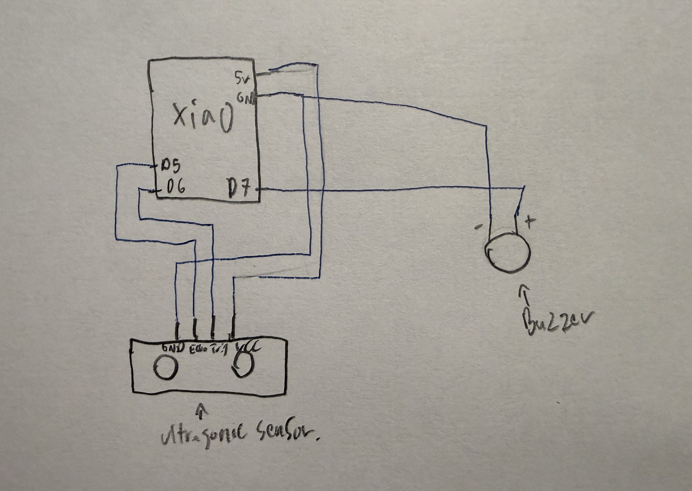
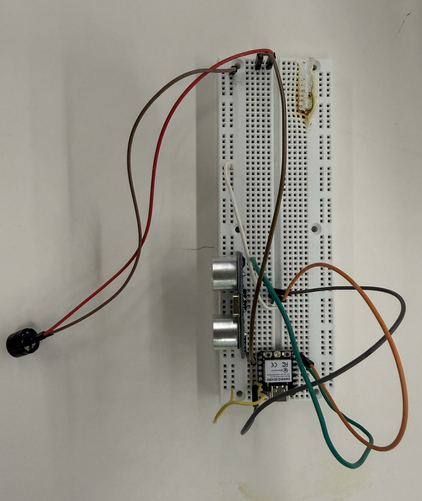
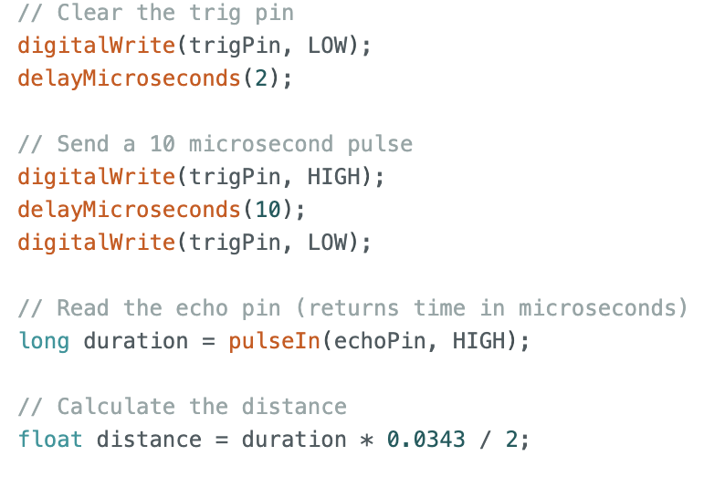
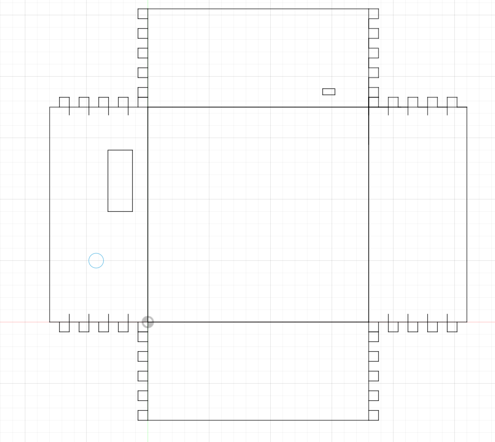

Week 4: Programming
Devices that slowly torture you: earspliting no brainrot
The earspliting no brainrot device I have created is exactly what it sounds like, it creates an earspliting annoying sound when you start to doomscroll hence the term brainrot. The no in "no brainrot" comes in as the annoying sound forces you to stop scrolling and place your phone back into the enclosure, this ensures the destruction of bad social media habits in a timely and orderly fasion.
Device Schematic

The schematic for the device is very simple with the VCC of the ultra sonic sensor conected to 5V, echoPin to D5, trigPin to D6, and GND to GND. For the buzzer the postive pin is connected to D7 and the negative pin is connected to GND.
Physical Wiring

Coding Process
The logic behind my code was very simple as the ultra sonic sensor had to detect if there was anything in the range of 10 cm and if there is nothing happens However, if there is nothing in the range of 10 cm the buzzer would start going off. This is shown in "Code 1".

Code 1
Logic is only part of the code as I had to know how to set up the utlrasonic sensor and buzzer which is when I found a tutorial. The tutorial taught me how to set up the sensor and how to translate the data the sensor gives to a distance I could understand. This is shown in "Code 2".
Click Me! Link to Tutorial
Code 2
Encolsure Design

I created an enclosure to hold the device and to place the phone into, I used a similar design to my box in week 2.
Click Me! link to enclosure stl